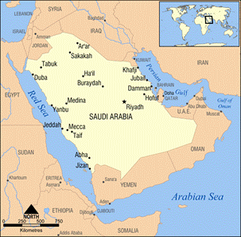

II. MAHOMET Ở LA MECQUE: 569-622
III. MAHOMET Ở MÉDINE: 622-630
IV. MAHOMET ĐẠI THẮNG: 630-632
Năm 565, Justinien[12] mất. Năm năm sau, Mahomet sinh trong một gia đình nghèo tại một xứ ba phần tư là sa mạc, chỉ có lưa thưa ít bộ lạc du mục mà của cải, bảo vật gom cả lại cũng không đầy chính điện giáo đường Saint Sophie[13]. Lúc đó không ai ngờ được rằng chưa đầy một thế kỉ sau, bọn dân du mục đó chiếm được một nửa những nước ở châu Á thuộc về đế quốc Byzantin, trọn Ba Tư và Ai Cập, một phần lớn Bắc Phi và đương tiến lên Y Pha Nho nữa. Sự bộc phát của bán đảo Ả Rập là biến cố lạ lùng nhất trong lịch sử thời Trung cổ; hậu quả của nó là một nửa thế giới ở chung quanh Địa Trung Hải bị người Ả Rập xâm chiếm và cải giáo (biến đổi tín ngưỡng).
Không có bán đảo nào lớn bằng bán đảo Ả Rập: chiều dài nhất được hai ngàn hai trăm cây số. Về phương diện địa chất, bán đảo đó tiếp tục sa mạc Sahara, là một phần của đai cát đi ngang qua Ba Tư, tới tận sa mạc Gobi. Tiếng Arabe (Ả Rập) có nghĩa là khô khan. Về phương diện địa lí nó là một cao nguyên mênh mông thình lình dựng đứng lên tới ba ngàn thước ở cách Hồng Hải năm chục cây số, rồi hạ lần lần xuống về phía Đông, qua những dãy núi hoang vu, tới vịnh Ba Tư. Ở giữa bán đảo nổi lên vài ốc đảo có cỏ, có làng mạc dưới bóng cây kè[14], với những giếng nước không mấy sâu; chung quanh, tứ phía đều là cát mênh mông trải ra tới mấy trăm cây số. Bốn chục năm tuyết mới đổ một lần, ban đêm lạnh tới không độ (0°); ban ngày ánh nắng làm cháy da, máu muốn sôi lên; vì không khí đầy cát nên dân chúng phải bận áo dài và quàng khăn để che da thịt và tóc. Trời như ngày nào cũng trong sáng, không khí thì như thứ “rượu vang có bọt”. Trên bờ biển, thỉnh thoảng có những cơn mưa rào trút xuống, nên trồng trọt được, văn minh được: nhất là bờ biển ở phía Tây, trong miền Hedjaz, nơi có những thị trấn La Mecque và Médine; ở phía Tây Nam, trong miền Yemen, nơi có những vương quốc cổ của Ả Rập (…)[15].

La Mecque và Médine (tức Mecca và Medina) nay thuộc Vương quốc Ả Rập Xê-út[16]
(http://upload.wikimedia.org/wikipedia/commons/0/04/Saudi_Arabia_map.png)
Bên cạnh những tiểu quốc ở Bắc và Nam, ngay cả trong những tiểu quốc đó nữa, trước thời Hồi giáo, tổ chức chính trị là một tổ chức gia tộc gồm thị tộc và bộ lạc. Mỗi bộ lạc mang tên một ông tổ chung tưởng tượng nào đó: chẳng hạn bộ lạc Bani-Gassan tự cho mình là hậu duệ của Ghassan. Trước Mahomet, mặc dù người Hy Lạp gọi tất cả dân chúng trong bán đảo là sarakenoi (tức Sarrasin) – có lẽ do tiếng Ả Rập sharkiyum[17](nghĩa là phương Đông) mà ra, nhưng thực sự những dân tộc đó không thống nhất về chính trị. Vì sự giao thông khó khăn, cho nên các bộ lạc tất phải tự trị về kinh tế, và giữ tính cách địa phương hoặc tính cách riêng của bộ lạc. Người Ả Rập chỉ trung thành và có bổn phận đối với bộ lạc của họ thôi, mà bộ lạc càng nhỏ thì lòng hy sinh đối với bộ lạc càng lớn; họ làm cho bộ lạc tất cả những gì mà hạng người văn minh làm cho tổ quốc, tôn giáo hoặc “nòi giống” của mình – nghĩa là nói dối, ăn cắp, giết người hoặc chết cho bộ lạc, với một lương tâm trong sạch. Mỗi bộ lạc hoặc thị tộc do một sheik thống trị, vị này được các đầu mục bầu trong một gia đình đã nhiều đời giàu có hơn, tài trí hơn hoặc chiến đấu anh dũng hơn các gia đình khác.
Nơi nào có làng thì dân chúng trồng trên các khu đất khô cằn được ít lúa và rau, nuôi ít gia súc và con ngựa đẹp; nhưng họ thấy trồng chà là, đào, hạnh, lựu, chanh, cam, chuối, vải… có lợi hơn nhiều; một số người trồng những hương thảo, như cây lài, cây oải hương (lavande), cây bách lí hương (thym); có kẻ nấu dầu hoa hồng mọc trên núi; có kẻ rạch thân vào loại cây để lấy nhựa mộc dược (myrrhe) hoặc nhựa thơm khác. Có thể một phần hai mươi dân chúng sống trong các thị trấn ở gần hoặc trên bờ biển phía Tây. Tại đó có nhiều hải cảng và chợ cho các thương thuyền trên Hồng Hải, còn ở phía trong nội địa, là những con đường lớn cho những thương đội muốn tới Syrie. Tương truyền từ năm 2743 trước T.L, Ả Rập đã buôn bán với Ai Cập, mà những thông thương hàng năm với Ấn Độ chắc cũng đã xảy ra từ hồi đó. Mỗi năm có những chợ phiên họp khi ở thị trấn này, khi ở thị trấn khác; chợ phiên lớn ở Ukaz gần La Mecque năm nào cũng thu hút mấy trăm con buôn, kép hát, nhà truyền giáo, con bạc, thi sĩ và gái điếm.
Năm phần sáu dân chúng là người Bédouin du mục di chuyển với đàn gia súc từ đồng cỏ này tới đồng cỏ khác, tuỳ mùa và tuỳ các trận mưa mùa đông. Người Bédouin yêu ngựa lắm, nhưng trong sa mạc, lạc đà là con vật họ quí nhất. Loài lạc đà chỉ đi được mười hai cây số một giờ, điệu bộ lắc lư một cách trịnh trọng mà uyển chuyển, nhưng có thể nhịn nước năm ngày mùa hè và hai mươi ngày mùa đông; sửa nó uống được, nước tiểu của nó làm cho tóc mượt[18], phân nó có thể phơi khô để đốt; thịt nó mềm, ngon; người Bédouin vừa kiên nhẫn và dai sức như lạc đà, vừa dễ cảm và hăng hái như ngựa, có thể đương đầu với sa mạc được. Nhỏ con, mảnh khảnh, mạnh và bền sức, họ có thể sống mấy ngày với vài trái chà là và một ít sữa; rượu chà là làm cho họ quên tình cảnh của họ và kích thích trí tưởng tượng của họ. Để cuộc đời khỏi đều đều buồn chán, họ kiếm người yêu hoặc gây lộn; họ cũng nóng nảy như người Y Pha Nho đã được di truyền huyết thống hoặc thị tộc của họ trả thù liền kẻ nào nhục mạ hoặc làm hại họ hoặc thị tộc họ. Già nửa đời cuộc họ là chiến tranh giữa các bộ lạc với nhau; và khi họ chiếm được Syrie, Ba Tư, Ai Cập, Y Pha Nho rồi thì họ chinh phạt liên miên, tha hồ phóng túng cướp bóc, nhưng mỗi năm họ cũng bỏ ra vài thì kì “hưu chiến thiêng liêng” để đi hành hương hoặc buôn bán. Họ cho sa mạc là của riêng; ai đi ngang qua – ngoài những thời hưu chiến – mà không nộp tiền “mãi lộ” thì họ cho là kẻ ngoại nhân xâm nhập, như vậy họ có ăn cắp của kẻ đó thì cũng như một cách thu thuế rất lương thiện vậy thôi. Họ khinh thị trấn vì ở đó phải theo luật lệ, phải buôn bán, chứ không thể ăn cắp được; sa mạc tuy tàn nhẫn mà họ lại yêu vì họ được tự do. Khả ái mà lại khác khao, rộng rãi mà lại hà tiện, bất lương mà lại trung tín, người Bédouin dù nghèo tới đâu cũng vậy, hiên ngang nhìn đời, tự hào về dòng máu không pha của mình, vui vẻ mang dòng họ mình.
Nhất là có một điểm ai cũng nhận: phụ nữ của họ đẹp vô song, một sắc đẹp tối (vì nước da của họ), dữ tợn, bừng bừng tình dục, đáng cho cả ngàn thi sĩ ngâm vịnh, nhưng mau tàn một cách bi thảm vì khí hậu quá nóng. Trước Mahomet – mà sau ông cũng vậy – người đàn bà Ả Rập chỉ được hưởng một thời tôn sùng ngắn ngủi rồi phải chịu cả cuộc đời dài vất vả. Họ thể bị cha chôn sống khi mới oe oe chào đời; người cha nào nhân từ lắm thì cũng xót xa cho số mình lỡ sinh ra con gái, mà tủi nhục không dám cho bạn bè thấy mặt con. Tuổi thơ của con gái được vài năm sung sướng, cha mẹ âu yếm vì nó đẹp, dễ thương, nhưng mới sáu bảy tuổi, cha mẹ nó đã gả nó cho một thanh niên trong thị tộc vì đằng nhà trai đã trả cho một số tiền mua nó. Chồng nó yêu nó như một tình nhân, sẵn sàng chiến đấu với cả thế giới để bảo vệ nó hoặc danh dự của mình; bọn con trai đã đam mê nó đã gây một tinh thần hiệp sĩ hơi khoa trương và tinh thần này đã xâm nhập từ Y Pha Nho. Nhưng một mặt phụ nữ được tôn sùng như một nữ thần, một mặt họ cũng chỉ là một động sản thuộc về cha, chồng hoặc con trai[19] và như mọi động sản khác, họ bị di tặng lại cho đời sau. Luôn luôn họ là tôi tớ, rất ít khi được là bạn trăm năm của đàn ông. Đàn ông bắt họ phải sinh nhiều con – đúng hơn là nhiều con trai – vì bổn phận của họ là phải “sản xuất” chiến sĩ. Chồng họ có thể đuổi họ đi lúc nào tuỳ ý.
Nhưng nét kiều diễm bí mật của họ cùng với chiến tranh đã kích thích thi nhân, làm đề tài cho nhiều thi phẩm. Người Ả Rập Tiền Hồi giáo (nghĩa là trước khi có Hồi giáo) thường vô học nhưng rất thích thơ, gần ngang với ngựa, thích đàn bà và thích rượu. Họ không có các nhà bác học, các sử gia, nhưng say mê lời hùng biện, những mỹ từ và những câu thơ rất điêu luyện. Ngôn ngữ họ rất gần giống cổ ngữ Do Thái (hébreu), có những biến hoá rắc rối của mẫu âm, một dụng ngữ phong phú, những phân biệt tinh xác mới đầu diễn được những tế nghị trong thi ca, rồi sau diễn được những tế nhị trong triết học. Người Ả Rập tự hào về ngôn ngữ vừa cổ vừa phong phú của họ, trong khi nói cũng như trong khi viết, thích dùng những âm du dương để tạo những mỹ từ, họ say mê nghe các thi sĩ ngâm trong các làng xóm, thị trấn, trong các trại quân giữ sa mạc hoặc các chợ phiên, những bài thơ trường thiên nhịp nhàng trôi chảy kể lại những chuyện tình cùng những cuộc giao chiến của các vị anh hùng, vua chúa các bộ lạc của họ. Đối với họ, thi sĩ là sử gia, người giữ phổ hệ, nhà luân lí, nhà trào phúng, nhà tiên tri, người hô hào chiến đấu; và khi một thi sĩ được giải trong các cuộc thi thơ – những cuộc thi này rất nhiều – thì cả bộ lạc mừng rỡ, cảm thấy được vinh dự lây. Cuộc thi thơ lớn nhất được tổ chức mỗi năm ở chợ phiên Ukaz; suốt một tháng gần như ngày nào các thị tộc cũng đưa người ra tranh giải; không có ban giám khảo, mà chỉ có quần chúng bu lại nghe, hoặc tán thưởng nhiệt liệt, hoặc bĩu môi chê bai; bài thơ nào thắng cuộc thì được chép bằng những chữ vàng son rực rỡ, vì vậy mà gọi là “kim thi” (thơ bằng chữ vàng) và được giữ gìn như một quốc bảo trong các kho tàng của vua chúa. Người Ả Rập cũng gọi những bài thơ đó là Muallakat, có nghĩa là treo, vì tương truyền các bài thắng cuộc được viết bằng chữ vàng trên nền lụa Ai Cập treo ở tường điện Kaaba tại La Mecque.
Người ta còn giữ được bảy bài trong số những Muallakat của thế kỉ thứ tư. Những bài đó thuộc vào thể kasida, một loại đoản ca tự sự, điêu luyện, tiết điệu và vần rất rắc rối, thường kể các chuyện tình hoặc các chiến tranh. Một trong những bài đó của thi sĩ Labid, một chiến sĩ ở mặt trận trở về quê hương, thấy nhà cửa hoang vu, vợ đã bỏ đi theo người khác. Labid tả cảnh đó, giọng đa cảm như Goldsmith[20] nhưng hùng hồn hơn, mạnh mẽ hơn. Trong một bài thơ khác, các phụ nữ Ả Rập khuyến khích bọn đàn ông ra trận, hăng hái chiến đấu:
Can đảm lên! Can đảm lên! Để bảo vệ phụ nữ chúng em, hỡi các bậc tu mi! Vung gươm mà chém cho hăng vào!... Chúng em là con gái của sao mai; những tấm thảm chúng em dẫm lên thật là êm đềm; cổ chúng em đeo ngọc trai, tóc chúng em thơm mùi xạ. Những anh nào hùng dũng chiến đấu với địch thì chúng em sẽ ôm vào lòng; còn bọn nhút nhát đào tẩu thì chúng em sẽ gạt ra, không được các em hôn đâu!
Đây là một bài ca rạo rực tình dục, tác giả là Imru’lkais:
Cô em kia, mặt che tấm voan, cũng đẹp nữa; nàng bị canh giữ kĩ trong lều, vậy mà nàng cũng tiếp lén tôi!
Tôi đã luồn qua được những dây cột lều, mặc dầu cha mẹ nàng, hạng khát máu, nằm trong bóng tối, rình để giết tôi.
Tôi tới vào nửa đêm, giờ mà chòm sao Thất Tinh hiện lên những vòng ngọc trai trên cái đai của vòm trời.
Tôi lén vô lều, ngừng lại. Nàng đã cởi hết những áo dài, chỉ còn giữ mỗi chiếc áo ngủ.
Nàng mắng yêu tôi: “Dùng cái mưu thuật gì vậy?... điên thôi là điên!”.
Chúng tôi cùng bước ra, nàng có ý tứ, kéo lết theo sau chiếc áo dài thêu để xoá hết vết chân của chúng tôi.
Và chúng tôi trốn ra khỏi chỗ đốt lửa trại. Tại đó, xa các cặp mắt tọc mạch, chúng tôi nằm trên cát, trong bóng tối đồng loã.
Tôi vuốt ve mái tóc của nàng, kéo mặt nàng lại sát mặt tôi, ôm thân thể của nàng mảnh mai như những vòng chân của nàng vậy.
Mặt nàng đẹp quá, không ửng đỏ mà thanh tú, quí phái, ngực nàng nhẵn như thuỷ tinh, để hở dưới chiếc vòng đeo cổ.
Y như một cặp ngọc trai còn thanh khiết ở dưới đáy biển, coi trong trẻo sáng đẹp mà không rờ tới được.
Nàng e lệ nằm nhích ra, chìa một má ra, một làn môi, nàng y như một con nai tơ ở Wujra…
Cổ nàng thon thon, trắng như sữa, như cổ con nai tơ, đeo chuỗi ngọc trai, hôn vào thấy dịu mát làm sao.
Làn tóc mây của nàng loà xoà trên vai, đen như chùm chà là rũ ở trên cành…
Thân hình nàng mảnh mai hơn chiếc dây thừng ở giếng nước. Cặp giò nàng nhẵn như những thân sậy đã tuốt lá ở bên bờ suối.
Nàng ngủ cả buổi sáng, biếng nhác lăn qua lăn lại, gần giữa trưa mới dậy bận áo dài vào.
Da tay nàng mịn màng, ngón tay nàng thon thon như những con trùng, nhẵn như những con rắn ở Thobya, những cây roi của Ishali.
Nàng toả sáng trong bóng tối, y như một ngọn đèn lẻ loi chỉ hướng đi tới một tu viện.
Các thi sĩ thời tiền Hồi giáo vừa ngâm thơ vừa gảy đàn hoạ theo; nhạc với thơ chỉ là một. Nhạc khí họ thích nhất là ống sáo, cây đàn “luth”, ống địch hoặc chiếc kèn (hautbois) bằng sậy và chiếc trống con. Bọn con hát trẻ thường được mời tới hát trong các bữa tiệc đàn ông; họ cũng hát trong những quán rượu; các vua chúa có một đoàn con hát để tiêu khiển cho vơi bớt nỗi lo lắng; và khi dân thành La Mecque tiến đánh Mahomet năm 624, họ dắt theo một đoàn con hát trẻ để đêm đốt lửa trại cho thêm vui và để kích thích họ khi ra trận. Ngay cả trong thời đại “dốt nát” đó, như họ nói, (tức thời Tiền Hồi giáo), bài hát Ả Rập cũng có giọng ai oán, không rườm rà, chỉ vài câu thơ cũng đủ cho họ hát cả giờ.
Người Ả Rập trong sa mạc có một tôn giáo riêng, cổ lỗ nhưng tế nhị. Họ sợ và thờ vô số thần, thần tinh thú, thần mặt trăng và thần trong lòng đất; đôi khi họ cầu khấn trời đừng phạt họ; nhưng xét chung thì họ rất sợ bọn djinn (quỉ) rất đông ở chung quanh họ, tìm mọi cách để làm dịu cơn giận của các djinn; họ an mệnh, không chống với số mạng, cầu nguyện vắn tắt chứ không dài dòng như phụ nữ, và chịu nhận là không hiểu được sự vô biên của vũ trụ. Hình như họ ít khi nghĩ tới kiếp lai sinh; vậy mà đôi khi họ cũng buộc con lạc đà ở bên cạnh mồ mả và không cho nó ăn, để người chết có lạc đà mà cưỡi, khỏi bị cái nông nỗi đi bộ lên thiên đường. Thỉnh thoảng họ giết người để tế thần; và có nơi họ thờ những phiến đá thiêng.
Trung tâm của sự thờ phụng đó là thành La Mecque. Thánh địa này phát triển không nhờ khí hậu tốt vì những núi đá trơ trọi ở chung quanh làm cho mùa hè ở đó nóng chịu không nổi; thung lũng đó là một chỗ hoang vu khô khan: trong cả khu thành không có một mãnh vườn, điều đó Mahomet đã biết. Nhưng nhờ vị trí – ở giữa đường trên bờ biển phía Tây, cách Hồng Hải sáu chục cây số – nó thành một chỗ ngừng chân tiện lợi cho các thương đoàn bất tận có khi gồm cả ngàn con lạc đà đi đi về về từ miền nam bán đảo Ả Rập (do đó, chở cả hàng hoá Ấn Độ và Trung Phi) lên miền Ai Cập, Palestine và Syrie. Những thương nhân đó hùn vốn lập hội, chi phối các chợ phiên ở Ukaz và cả những lễ nghi tôn giáo ở chung quanh điện Kaaba và phiến Đá Đen linh thiêng trong điện.
Kaaba có nghĩa là một kiến trúc vuông, và là nguồn gốc tiếng cube (hình lập phương) của Pháp. Theo các người Hồi giáo chính thống, điện Kaaba được xây dựng lại mười lần. Lần đầu tiên, hồi mới có sử, là do các thiên thần từ trên thượng giới xuống xây cất; lần thứ nhì do Adam – thuỷ tổ loài người xây cất; ba là công của Seth, con của Adam; lần thứ tư là do thánh Abraham và Imaël[21], con trai của ngài và của bà Agar…; lần thứ bảy do Kusay, chúa bộ tộc Koraishite (ở gần La Meque); lần thứ tám do các chúa bộ lạc thời Mahomet (605); lần thứ chín và thứ mười do các thủ lĩnh Hồi giáo năm 681 và 696; điện Kaaba hiện nay là điện xây cất lần thứ mười đó. Điện dựng gần đúng trung tâm một khu có tường và trụ quan (portique) bao chung quanh, khu đó gọi là Masjid Al-Haram, có nghĩa là giáo đường linh thiêng. Điện là một toà nhà hình chữ nhật bằng đá, dài 13 thước, rộng 12 thước, cao 17 thước. Trong gốc Đông Nam, cách mặt đất khoảng 1 thước rưỡi, vừa tầm mắt người cho dễ hôn, có gắn phiến Đá đen, màu huyết đậm, hình trái soan, đường kính khoảng hai tấc. Nhiều tín đồ cho rằng phiến đá đó từ trên trời đem xuống – rất có thể nó là một vẫn thiết (méteorite); đa số tin rằng nó có ở điện Kaaba từ thời Abraham. Các học giả Hồi giáo bảo nó là biểu tượng dòng dõi của Abraham bị Israël đuổi đi, mà sau thành thuỷ tổ của bộ lạc Koraishite (…).
Ở thời Tiền Hồi giáo, trong điện Kaaba có nhiều ngẫu tượng, mỗi ngẫu tượng là một vị thần. Một trong những vị thần này tên là Allah, có lẽ là thần của bộ lạc Koraishite; ba vị thần khác là con gái của Allah: bà al-Uzza, bà al-Lat và bà Manah. Sự thờ phụng đó của người Ả Rập đã có từ thời thượng cổ vì sứ giả Hy Lạp Hérodote (484?-425? trước T.L.) đã chép rằng Al-il-Lat (tức al-Lat) là một vị thượng đẳng thần của Ả Rập. Bộ lạc Khoraishite thờ Allah là thần chính, như vậy là dọn đường cho tín ngưỡng nhất thần giáo; họ bảo dân chúng La Mecque rằng Allah là thần đất đai, vậy dân chúng phải đóng thuế cho thần một phần mùa màng và những gia súc con so. Người Koraishite tự nhận là hậu duệ của Abraham và Israël, chỉ định các thầy tư tế và các người giữ điện; họ quản lí lợi tức của điện. Một thiểu số quí phái, hậu duệ của Kusay, cai trị thành La Mecque về phần dân sự.
Đầu thế kỉ thứ sáu, bộ lạc Koraishite chia làm hai phe: một phe do thương gia giàu có và từ tâm Hashim cầm đầu; một phe do một người cháu của Hashim, ghen ghét Hashim, tên Ymayya cầm đầu. Sự tranh chấp gắt gao đó sau này có ảnh hưởng quan trọng. Khi Hashim chết, một người con trai hay em của ông, tên là Abd-al-Muttlib lên thay, thành một trong những vị thủ lĩnh của La Mecque. Năm 568, con trai của Abd-al-Muttlib, tên là Abdallah cưới nàng Amina, cũng hậu duệ Kusay[22]. Abdallah ở với vợ được ba ngày rồi lên đường viễn thương (buôn bán ở xa) và chết ở dọc đường trong khi trở về Médine. Hai tháng sau (569), Amina sinh ra được một người con trai, sau này thành một trong những nhân vật quan trọng nhất thời Trung cổ.
Mahomet dòng dõi quí phái, nhưng gia sản tầm thường: Abdallah chỉ để lại cho ông có năm con lạc đà, một đàn dê, một căn nhà và một tên nô lệ săn sóc cho ông hồi còn nhỏ. Tên ông có nghĩa là “rất đáng khen”, rất hợp với vài đoạn trong thánh kinh báo trước ông sẽ ra đời. Ông mồ côi mẹ hồi sáu tuổi, được ông nội nuôi nấng – cụ hồi đó đã bảy mươi ba tuổi – rồi sau được một người chú (hay bác) tên là Abu Talib săn sóc. Ông được hai người đó âu yếm, nhưng hình như không người nào lo việc dạy ông tập đọc tập viết cả; thời đó, người Ả Rập coi thường kiến thức đó; cả bộ lạc Koraishite chỉ có mười bảy người chịu học thôi. Suốt đời ông, không thấy viết một hàng chữ nào cả; việc đó ông giao cho viên thư kí. Bề ngoài có vẻ vô học, vậy mà ông soạn được cuốn sách nổi danh nhất, hùng hồn nhất trong văn chương Ả Rập; ông lại có tài chỉ huy mà hạng người có học thường thiếu.
Chúng ta không biết gì về thời thiếu niên của ông cả, mặc dầu những chuyện hoang đường về quãng đời đó được chép đầy mười ngàn cuốn sách. Tương truyền hồi ông mười hai tuổi, Abu Talib bắt ông theo một thương đội đi từ Bostra lại Syrie, có lẽ nhờ chuyến đi này ông được biết ít nhiều về Do Thái giáo và Kitô giáo. Một chuyện khác kể rằng vài năm sau ông được một quả phụ giàu có tên là Khadija phái đi buôn bán ở Bostra. Rồi bỗng nhiên, năm hai mươi tuổi, ông cưới quả phụ đó tuổi đã bốn mươi và đã có mấy người con. Ông sống với bà tới khi bà mất, hai mươi sáu năm sau, không cưới vợ bé nào hết, điều đó cực kì hiếm đối với một người Hồi giáo phong lưu, nhưng đối với ông bà thì có lẽ là tự nhiên. Hai ông bà sinh được mấy người con gái, sau này nổi tiếng nhất là cô Fatima, và hai người con trai đều chết khi còn nhỏ tuổi. Ông nuôi Ali, người con của Abu Talib, làm nghĩa tử. Khadija là một người đàn bà tốt, một người vợ hiền, buôn bán giỏi, một nực thuỷ chung với Mahomet qua bao cuộc thăng trầm về tinh thần của ông, và trong tất cả các bà vợ[24], ông quí bà nhất.
Ali sau cưới Fatima, âu yếm tả cha nuôi hồi bốn mươi lăm tuổi như sau:
Trung bình, không cao không thấp. Nước da trắng hồng hồng, mớ tóc đẹp, dầy và láng, rũ xuống hai vai. Râu rậm dài tới ngực… Nét mặt thật hiền từ, tới nỗi ai đã thấy một lần thì không thể rời được nữa. Tôi đương đói quá mà chỉ muốn nhìn nét mặt của Người là quên đói liền. Trước mặt Người, mọi người đều quên hết những nỗi đau khổ, rầu rĩ của mình.
Con người đó nghiêm trang, ít khi cười, nén được tinh thần trào phúng rất mạnh của mình, biết rằng nó có hại đối với hạng thủ lĩnh. Bẩm sinh ốm yếu, ông hay giận dữ, hay buồn bực, dễ xúc động. Những lúc bị kích thích hay nổi giận, những đường gân ở mặt ông nổi lên một cách đáng sợ; nhưng ông biết ân hận, nén giận và có thể tha thứ ngay cho kẻ thù bị ông hạ.
Có nhiều người theo Kitô giáo sống ở Ả Rập, một số sống ở La Mecque; Mahomet kết thân với một trong những người này tên là Warakah ibn Nawfal, con chú con bác của Khadija, “biết các Thánh kinh của người Hébreu[25] và người Kitô giáo”. Mahomed thường tới Médine, nơi mà thân phụ ông đã qua đời; có lẽ ông đã gặp ở đó vài người Do Thái vì dân Médine đa số là Do Thái. Nhiều trang trong kinh Coran chứng tỏ rằng ông đã tán thưởng luân lí của người Kitô giáo, Nhất thần giáo của người Do Thái, và thấy Kitô giáo cùng Do Thái giáo có uy tín mạnh ra sao nhờ thánh kinh mà người ta tin là lời khải thị của Thượng Đế. So với những tôn giáo đó, ông thấy sự sùng bái ngẫu tượng có tính cách đa thần, luân lí không nghiêm, chiến tranh thường xảy ra giữa các bộ lạc với nhau, tình trạng chia rẽ về chính trị của dân tộc Ả Rập có vẻ cổ lỗ, đáng xấu hổ. Ông cảm thấy cần phải có một tôn giáo mới – một tôn giáo đoàn kết, hợp nhất tất cả các loạn đảng đó thành một quốc gia mạnh mẽ; một tôn giáo đem lại cho họ một luân lí không thấp kém dựa theo luật chém giết và trả thù của dân du mục Bédouin, mà cao thượng hơn, căn cứ vào những giới luật do Thượng Đế khải thị, do đó có được một sức mạnh chắc chắn. Nhiều người cũng có những ý nghĩ đó; vì có nhiều nhà “tiên tri”[26] xuất hiện ở Ả Rập vào khoảng đầu thế kỉ thứ VII. Nhiều người Ả Rập đã bị ảnh hưởng người Do Thái mà chờ đợi một vị chúa Cứu thế. Một môn phái Ả Rập, môn phái hanef, đã từ bỏ sùng bái ngẫu tượng ở đền Kaaba và thuyết giáo rằng có một vị Thượng Đế làm chủ vũ trụ, ai ai cũng sẵn lòng thờ phụng Ngài. Cũng như mọi nhà thuyết giáo thành công khác, Mahomet đã biểu lộ được đúng nhu cầu cùng xu hướng đương thời, tạo cho những cái đó một tiếng nói và một hình thức riêng.
Càng gần tới tuổi tứ tuần, ông càng suy tư về vấn đề tôn giáo. Trong tháng trai giới Ramadan[27], ông vô ở một cái hang (có khi cùng gia đình) tại chân núi Hira, cách La Mecque 5 cây số, mấy ngày liền nhịn ăn, trầm tư và tụng niệm. Một đêm năm 610, một mình trong hang, ông thấy một linh giác, do đó mới thành lập Hồi giáo. Theo Muhammad ibn Ishak, người chép tiểu sử kĩ nhất của ông thì việc xảy ra như sau:
Trong khi tôi ngủ, chân đắp một tấm phủ bằng gấm thêu trên đó có viết những chữ gì đó, thì thánh Gabriel hiện ra, bảo: “Này đọc đi!”. Tôi đáp: “Con không biết đọc”. Ngài dùng tấm phủ chân đè tôi mạnh tới nỗi tôi muốn nghẹt thở. Rồi Ngài buông tôi ra, bảo: “Đọc đi!”… thế là tôi đọc lớn tiếng, sau cùng Ngài bỏ đi. Rồi tôi tỉnh dậy, và những chữ đó như khắc trong tim tôi. Rồi tôi bước ra ngoài hang, đi tới nửa đường trong núi, và nghe thấy có tiếng ở trên trời bảo tôi: “Này Mahomet, con là sứ giả của Allah và ta là Gabriel đây”. Tôi ngẩng lên nhìn, và thấy thánh Gabriel có thân hình con người, chân chụm nhau ở bờ vòm trời, Ngài bảo tôi: “Này Mahomet, con là sứ giả của Allah và ta là Gabriel đây”.
Trở về nhà ông cho bà Khadija hay việc đó. Sử chép rằng bà tin rằng đó là lời khải thị của Trời, và khuyến khích ông tuyên bố sứ mạng của ông.
Sau đó còn nhiều linh giác như vậy nữa. Thường thường, mỗi lần xảy ra là ông bị chứng động kinh, té xuống đất hoặc ngất đi, trán ướt đẫm mồ hôi; ngay con lạc đà ông cưỡi cũng cảm thấy ông xúc động, nên nó thình lình vùng vẫy. Mahomet sau này cho rằng tóc ông mau bạc vì những cơn như vậy. Người ta gạn hỏi ông sự khải thị xảy ra cách nào, ông đáp cả bộ kinh Coran đã có sẵn trên trời, và thánh Gabriel cho ông biết từng đoạn một. Người ta lại hỏi ông làm sao ông nhớ hết được, ông đáp rằng vì thiên sứ lập lại cho ông từng chữ. Những người ở bên cạnh ông trong khi xảy ra những khải thị đó không thấy cũng không nghe thấy vị thiên sứ. Những lần giật gân của ông có lẽ là do động kinh; đôi khi phát ra những thanh âm mà ông bảo là giống tiếng chuông – cái đó thường xảy ra trong cơn động kinh. Nhưng ông không cắn lưỡi, mà sức cầm nắm của ông cũng không giảm như các người động kinh; còn đời sống của ông không tỏ rằng trí óc ông suy nhược vì chứng động kinh; trái lại, tư tưởng của ông càng ngày càng sáng suốt, lòng tin ở sứ mạng cùng quyền năng của ông càng ngày càng tăng cho tới hồi ông sáu mươi tuổi. Các chứng cứ không cho phép ta kết luận một điều gì cả; dù sao thì chúng cũng không bao giờ thuyết phục nổi một tín đồ Hồi giáo chính thống.
Trong bốn năm sau, Mahomet càng ngày càng tuyên bố rõ ràng mình là vị Tiên tri do Allah giao cho sứ mạng dẫn dắt dân tộc Ả Rập, dạy cho họ một luân lí mới, tôn giáo nhất thần. Không thiếu gì trở ngại. Những tư tưởng mới chỉ được vui vẻ chấp nhận khi nào người ta thấy có một cái lợi vật chất tức thì; mà Mahomet lại sống trong một xã hội thương nhân hoài nghi kiếm ăn một phần nhờ các người hành hương lại La Mecque để cúng vái vô số thần trong điện Kaaba. Để thắng trở ngại đó, ông hứa với các tín đồ rằng hễ theo ông thì khỏi bị dày xuống địa ngục mà được lên thiên đường sống một đời sung sướng. Ông mở rộng cửa để đón tiếp tất cả những ai muốn nghe ông – dù là giàu nghèo hay thuộc hàng nô lệ, dù là Ả Rập, người theo Kitô giáo hay Do Thái giáo; và tài hùng biện nồng nhiệt của ông lôi cuốn được một số người. Người đầu tiên cải giáo theo ông là bà vợ già của ông, người thứ nhì là Ali, em con chú con bác của ông, người thứ ba là gia nhân Zeid, vốn là nô lệ ông mua về rồi giải phóng ngay cho, người thứ tư là một người bà con tên là Abu Bekr, có địa vị cao trong bộ lạc Koraishite.
Abu Bekr thuyết phục được năm vị thủ lĩnh nữa ở La Mecque theo tôn giáo mới; ông ta với năm người đó thành “lục hữu” (sáu người bạn) của vị Tiên tri (tức Mahomet) và những hồi kí của họ về Mahomet sau này thành những truyền thuyết được tôn kính nhất của Hồi giáo. Mahomet thường tới điện Kaaba, lại gần các người hành hương để thuyết giáo về một vị thần duy nhất. Các người Koraishite mới đầu mỉm cười kiên nhẫn nghe theo ông, cho ông là điên khùng, và bằng lòng quyên tiền nhau đưa ông lại một y sĩ để trị bệnh điên. Nhưng khi ông mạt sát sự sùng bái ngẫu tượng ở điện Kaaba thì họ nhất tề đứng lên bảo vệ lợi tức của họ, và may được ông chú Abu Talib che chở cho chứ không thì Mahomet đã bị họ đánh đập rồi. Abu Talib không ưa gì tôn giáo mới của Mahomet, nhưng ông vẫn giữ cổ tục trong bộ lạc, nên phải bênh vực bất kì người nào trong bộ lạc.
Vì ngại một cuộc đổ máu xảy ra, nên các người Koraishite không dùng bạo lực đối với Mahomet và bọn người tự do (nghĩa là không phải nô lệ) theo ông. Nhưng với bọn nô lệ cải giáo[28] thì họ có thể dùng những biện phép ngăn cản mà không sợ phạm luật lệ của bộ lạc. Nhiều kẻ bị giam, một số bị bêu dưới nắng hàng giờ, không được đội nón, không được uống nước. Abu Bekr trong mấy năm đi buôn đã để dành được 40.000 đồng bạc; bây giờ bỏ ra 35.000 đồng để chuộc tự do cho những người nô lệ cải giáo; và Mahomet bảo rằng nếu bị ép buộc mà phản cung thì đáng tha thứ, do đó công việc thu nhận người cải giáo càng dễ dàng hơn, thành thử bọn Koraishite lúng túng khó chịu vì lòng nhân từ của Mahomet đối với nô lệ, hơn là vì tín ngưỡng của ông. Bọn Koraishite vẫn tiếp tục hành hạ các người cải giáo nghèo một cách tàn nhẫn, khiến Mohamet cho phép và khuyên các người này di trú qua Abyssinie, ở đây họ được vua Abyssinie theo Kitô giáo tiếp đãi tử tế.
Năm sau xảy ra một biến cố quan trọng đối với Hồi giáo, cũng gần ngang việc thánh Paul hồi xưa cải giáo để theo Kitô giáo. Omar ibn al-Khattab trước vẫn chống đối kịch liệt, bây giờ theo Mahomet. Con người đó cực kì lực lưỡng, có quyền hành lớn trong xã hội, tinh thần rất can đảm. Ông theo đạo mới, làm cho những tín đồ bị ngược đãi thêm lòng tin tưởng và nhiều người khác xin vô đạo. Họ không lén lút thờ phụng trong nhà nữa mà bạo dạn thuyết giáo ở ngoài phố. Những người thờ các thần ở điện Kaaba liên kết với nhau, tuyệt giao với thị tộc Hashimite vì thị tộc này vẫn tự cho là có bổn phận phải bênh vực Mahomet. Để tránh cuộc xung đột, nhiều người Hashimite, trong số đó có Mahomet, rút lui vào một khu vực quạnh hiu của La Mecque, tại đó Abi Talib có thể che chở họ được (615). Sự chia rẽ làm hai phe đó kéo dài hai năm, rồi một số người Koraishite bớt giận đi, mời các người Hashimite trở về nhà cũ và cam đoan không gây sự nữa.
Nhóm người cải giáo mừng rỡ, nhưng qua năm 619, Mahomet gặp ba điều bất hạnh. Khadija, người chống đỡ trung thành nhất của ông, và Abu Talib, người che chở ông, đều mất. Thấy La Mecque không được yên ổn, lại thất vọng vì số tín đồ ở đó tăng chậm quá, Mahomet lại Tail (620), một thị trấn khá đẹp cách La Mecque một trăm cây số về phía Đông. Nhưng các nhà thủ lĩnh ở đó không muốn làm mất lòng giới quí tộc thương nhân ở La Mecque; mà dân chúng rất ghê sợ mọi cải cách về tôn giáo nên la ó phản đối ông, liệng đá vào ông, ống chân ông chảy máu. Trở về La Mecque, ông cưới quả phụ Sauda và hỏi cưới nàng Aisha, ái nữ diễm lệ, nhiệt tình của Abu Bekr; lúc đó nàng mới mười bảy tuổi mà ông đã năm chục.
Trong thời gian đó, ông vẫn thường thấy linh giác. Một đêm, ông có cảm giác được một phép mầu nào chở ông tới Jérusalem trong giấc ngủ; ở đây có một con ngựa thần có cánh, con Borak, đợi ông ở dưới chân tường Than khóc của đền Do Thái đã bị phá huỷ, ông nhảy lên lưng nó, nó bay lên tới trời rồi trở xuống; và do một phép mầu khác, sáng hôm sau, ông trở về bình an vô sự trên chiếc giường của ông ở La Mecque. Do chuyện bay lên trời đó mà Jérusalem thành thánh địa thứ ba của Hồi giáo.
Năm 620, Mahomet thuyết giáo các thương nhân Médine lại hành hương ở điện Kaaba; họ hơi tán thành ông vì tiếp xúc với người Do Thái ở Médine, họ đã biết đạo nhất, thuyết thiên sứ và thuyết mạt nhựt thẩm phán[29]. Trở về Médine, họ kể lại cho bạn bè nghe; nhiều người Do Thái thấy đạo của Mahomet không khác mấy đạo của họ, thử theo đạo của Mahomet xem sao; và năm 622, bảy mươi ba người dân ở Médine, lấy tư cách cá nhân, lại thăm Mahomet, mời ông lại Médine. Ông hỏi họ có chịu trung thành bảo vệ ông như bảo vệ chính gia đình họ không; họ chịu và thề sẽ trung thành, nhưng hỏi ông nếu lỡ họ bị giết thì họ sẽ được phần thưởng gì. Ông đáp: được lên thiên đường.
Vào khoảng đó, Abu Sufyan, cháu nội của Umayya, làm thủ lĩnh bộ lạc Koraishite ở La Mecque. Từ hồi nhỏ sống trong một gia đình căm thù tất cả các hậu duệ của Hashim, nên Abu Sufyan lại ngược đãi môn đồ của Mahomet. Chắc ông ta đã phong thanh rằng vị Tiên tri (tức Mahomet) tính trốn qua Médine, mà khi có chút uy tín ở Médine rồi thì Mahomet sẽ xúi dân Médine gây chiến với La Mecque, chống lại sự thờ phụng ở điện Kaaba. Ông bèn ra lệnh cho vài người Koraishite bắt giam, có thể là giết Mahomet. Có vài người cho hay trước, Mahomet cùng với Abu Bekr trốn kịp vào hang Thaur các La Mecque khoảng một dặm. Bọn mật thám Koraishite lùng kiếm ông ba ngày mà không thấy. Thấy người con của Abu Bekr dắt lạc đà lại hang và đương đêm Mahomet cùng với Abu Bekr trốn lên phương Bắc, đi bốn trăm cây số tới Médine ngày 24 tháng 9 năm 622. Hai trăm môn đồ ở La Mecque đã cải trang làm người hành hương đi trước họ rồi, và cùng với những tân tín đồ ở Médine, đứng đợi ở cửa thành tiếp đón vị Tiên tri.
Mười bảy năm sau, viên calife Omar[30] lấy ngày đầu năm Ả Rập đó, năm Mahomet trốn lại Médine (tức 16 tháng 7 năm 662) làm đầu kỉ nguyên Hồi giáo.
Thời đó thị trấn còn mang tên Yathrib, sau này mới đổi tên là Medinat al-Nabi (nghĩa là thị trấn của đức Tiên tri); nó nằm ở mép phía Tây của cao nguyên ở giữa bán đảo Ả Rập. So với La Mecque, thì đây là một cõi lạc viên, khí hậu dễ chịu, có hàng trăm khu vườn, bụi kè và trại ruộng. Khi Mahomet vào thị trấn, hết nhóm người này tới nhóm người khác reo hò: “Xin đức Tiên tri ngừng lại đây, ở đây với chúng tôi” – người Ả Rập có tính hay năn nỉ, và một số nắm dây cương của lạc đà, giữ lại. Mahomet trả lời rất khéo: “Tuỳ ý con lạc đà muốn ngừng ở đâu thì ngừng; xin bà con cứ để cho nó tự do tiến tới”; thế là không ai ganh tị nhau nữa, mà chỗ ông ngừng lại sẽ được coi là do Thượng Đế định trước. Ngay tại chỗ con lạc đà ngừng lại, Mahomet cho cất một giáo đường và hai ngôi nhà phụ cận, một cho Sauda, một cho Asha, sau này hễ cưới thêm bà vợ nào, ông lại cất thêm một ngôi nhà nữa.
Khi rời La Mecque, ông đã cắt đứt nhiều liên lạc gia đình, bây giờ ông rán thay tình máu mủ đó bằng tình đồng bào trong một quốc gia thần quyền. Để dẹp mối ganh tị lúc đó đã phát sinh giữa những tín đồ cũ ở La Mecque cùng tị nạn với ông (tức bọn Muhajirin) và tín đồ mới ở Médine đã phù trợ ông (tức bọn Ansar), ông bảo một người trong nhóm này kết tình huynh đệ với một người trong nhóm kia, và ông mời cả hai nhóm đoàn kết trong một tình thiêng liêng, cùng lại giáo đường thờ phụng Thượng Đế. Trong buổi lễ đầu tiên ở giáo đường, ông la lớn: “Allah là đấng tối cao!”. Cả đám tín đồ hét lớn câu đó. Rồi, lưng vẫn quay về phía tín đồ, ông quì xuống khấu đầu cầu nguyện. Khi ở trên đàn xuống, ông đi giật lùi, tới chân bậc thang, ông lại vừa tiếp tục cầu nguyện vừa khấu đầu ba lần. Quì như vậy là để tỏ mình qui phục Allah, ngài đã đặt tên cho tín ngưỡng mới này cái tên là Islam (có nghĩa là qui phục), còn các tín đồ thì tên là muslimin hoặc mulsuman (có nghĩa là những kẻ qui phục Thượng Đế). Rồi quay mặt về đám tín đồ, ông bảo họ phải vĩnh viễn giữ lễ nghi đó; ngày nay các tín đồ Hồi giáo vẫn giữ hình thức cầu nguyện đó dù trong giáo đường hay ở giữa sa mạc, trong khi đi đường hay ở ngoại quốc, một nơi không có giáo đường. Cuối buổi lễ là một bài thuyết giáo cho hay một lời khải thị mới và dặn trong tuần lễ đó tín đồ phải theo những việc gì.
Mahomet hồi ấy bắt đầu tạo luật lệ công quyền cho Médine; càng ngày ông càng phải để nhiều thì giờ suy tư về vấn đề tổ chức xã hội, luân lí, cư xử hàng ngày, cả vấn đề ngoại giao giữa các bộ lạc nữa. Cũng như bên Do Thái giáo, không có sự phân biệt giữa các việc thế tục và việc tôn giáo; việc nào cũng thuộc về quyền tài phán của giáo hội cả; Mahomet vừa là César vừa là Kitô. Nhưng không phải mọi người dân ở Médine đều phục tùng ông. Đa số người Ả Rập, “bọn ác ý”, tỏ vẻ hoài nghi tôn giáo mới, cho rằng Mahomet đương diệt cổ tục và tự do của họ, lôi kéo họ vào chiến tranh. Đa số người Do Thái vẫn giữ tôn giáo riêng của họ và tiếp tục buôn bán với bọn Koraishite ở La Mecque. Mahomet lập một điều ước hoà hảo rất tế nhị với họ:
Người Do Thái nào qui phục cộng đồng chúng ta thì được che chở khỏi bị sĩ nhục, phiền nhiễu; họ cũng có quyền được chúng ta giúp đỡ như dân tộc của chúng ta, họ… cùng với các người Hồi giáo họp thành một quốc gia phức hợp duy nhất; họ được tự do theo tôn giáo của họ y như chúng ta… Họ sẽ hợp lực với chúng ta để chống đỡ Yatharib, chiến đấu với kẻ thù… Mọi sự tranh chấp sau này giữa những kẻ chấp nhận hiến chương này sẽ do vị Tiên tri, sứ giả của Thượng Đế, phán đoán quyết định.
Chẳng bao lâu điều ước tất cả các bộ lạc Do Thái ở Médine và các vùng lân cận chấp nhận, như bộ lạc Banu-Nedhir, bộ lạc Banu-Kuraiza, bộ lạc Banu-Kainuka…
Sự di cư của hai trăm gia đình từ La Mecque lại, làm cho Médine thiếu thực phẩm. Mahomet giải quyết vấn đề đó theo cách của những kẻ sắp chết đói; hễ thấy thức ăn ở đâu là chiếm. Ông sai bọn phụ tá đánh cướp các thương đoàn đi qua Médine, như vậy chỉ là theo cái “luân lí” của hầu hết các bộ lạc Ả Rập đương thời. Khi cướp bóc được gì thì bốn phần năm chia cho kẻ có công, một phần năm ông giữ để chi dùng vào việc tôn giáo và từ thiện; kẻ ông phái đi cướp bóc mà tử trận thì người vợ goá được lĩnh phần, còn chính kẻ đó được lên thiên đường liền. Được khuyến khích như vậy, sự cướp bóc tăng lên rất mạnh, bọn thương nhân ở La Mecque không được làm ăn yên ổn, tìm cách trả thù. Một cuộc tập kích làm cho cả Médine lẫn La Mecque phẫn nộ vì làm thiệt mạng một người mà lại xảy ra nhằm ngày cuối cùng của tháng Rajab, một trong những tháng thiêng liêng mà luân lí Ả Rập cấm ngặt mọi sự tàn bạo. Năm 623, Mahomet đích thân tổ chức một bọn ba trăm người có vũ khí để tập kích một thương đoàn có nhiều hàng hoá đi từ Syrie tới La Mecque. Abu Sulyan chỉ huy thương đoàn đó được người báo cho hay bèn đổi đường và xin La Mecque tiếp viện. Chín trăm người tới cứu. Hai bên gặp nhau ở oued[31] Bedr, bốn chục cây số ở phía Nam Médine. Nếu lần ấy Mahomet bại trận thì tiền đồ của ông có thể chấm dứt ở đó rồi. Ông đích thân chỉ huy và chiến thắng, cho rằng đó là phép mầu của Allah xác nhận uy quyền của ông; ông trở về Médine với vô số chiến lợi phẩm và một đám đông tù binh (tháng giêng 624). Những tù binh nào trước kia ngược đãi tín đồ của ông đều bị ông xử tử; còn những người khác được thả sau khi chuộc mạng bằng một số tiền lớn. Nhưng Abu Sulyan lần đó sống sót và hứa sẽ phục thù: “Còn tôi, nếu chưa đi đánh Mahomet thì tôi sẽ không nhúng vào dầu và lại gần vợ tôi”.
Nhờ thắng trận đó mà mạnh lên, Mahomet áp dụng ngay thứ luân lí thông thường của chiến tranh. Asma, một nữ tu sĩ ở Médine, làm thơ công kích ông; một tín đồ Hồi giáo mù tên là Omeir, lẻn vào phòng nàng vì căn hận đâm nàng mạnh tới nỗi lưỡi gươm xuyên qua ngực nàng, cắm ngập xuống giường. Sáng hôm sau, trong giáo đường, Mahomet hỏi Omeir: “Mày đã giết Asma?”. – “Dạ, như vậy có bị bắt giam không?”. – “Không, quan trọng gì cái đó”. Afak, một ông lão đã trăm tuổi, cải giáo theo đạo Do Thái, làm một bài thơ phúng thích Mahomet, nên bị cứa cổ trong khi ngủ ngoài sân. Một thi sĩ nữa ở Médine, Kabibn al-Ashraf, mẹ là người Do Thái, bỏ Hồi giáo khi Mahomet chống lại người Do Thái; ông ta làm thơ hô hào các người Koraishite phục thù và gửi vè ve vãn các phụ nữ Hồi giáo làm cho bọn đàn ông Hồi giáo nổi doá. Mahomet hỏi: “Ai thủ tiêu thằng đó cho ta nào?”. Ngay buổi tối hôm ấy, người ta đem dâng Mahomet thủ cấp của thi sĩ đó. Các người Hồi giáo cho các cuộc xử tử đó để chống sự phản đạo là chính đáng; Mahomet là một quốc trưởng thì có đủ quyền để buộc tội.
Các người Do Thái ở Médine mới đầu thấy tôn giáo đó rất giống tôn giáo của mình, bây giờ không thích nó nữa vì nó hung hăng, hiếu chiến. Họ mỉa mai cách Mahomet giải thích Thánh kinh, và thái độ của Mahomet tự cho mình là Chúa Cứu thế mà các vị Tiên tri của Do Thái đã nói tới. Mahomet trả đũa lại, bảo Allah đã khải thị cho ông rằng bọn Do Thái đã sửa đổi Thánh kinh, giết các vị Tiên tri và bài xích Chúa Cứu thế. Mới đầu ông lựa Jérusalem làm kibla, tức điểm mà các tín đồ Hồi giáo phải hướng về đó trong lúc cầu nguyện; năm 634, ông quyết định lấy La Mecque và điện Kaaba làm kibla. Người Do Thái tố cáo ông là trở về sự tôn sùng ngẫu tượng. Cũng vào khoảng đó, một thiếu nữ Hồi giáo đi chơi chợ của bộ lạc Do Thái Banu-Kainuka ở Médine; trong khi nàng ngồi trong một tiệm thợ bạc, một người Do Thái tinh nghịch ghim ở phía sau chiếc váy của nàng vào lưng chiếc áo che thân trên. Khi nàng đứng dậy, thấy hở hang, xấu hổ quá, hét lên. Một người Hồi giáo giết tên Do Thái đó, và bị anh em tên này giết lại để trả thù. Mahomet bảo tín đồ phong toả khu của bộ lạc Do Thái Banu-Kainuka luôn mười lăm ngày; họ xin đầu hàng (hết thảy là bảy trăm người) và ông bắt họ phải rồi Médine, mà không được mang theo một chút của cải.
Abu Sufyan đã giữ đúng lời nguyện tiết dục, đợi một năm rồi đem quân tấn công Mahomet. Đầu năm 625 ông dẫn một đạo quân 3.000 người lại núi Ohrod, cách Médine 5 cây số về phía Bắc. Mười lăm phụ nữ, trong đó có cả mấy bà vợ của Abu Sulyan đi theo quân đội, hát những điệu man rợ, bi ai, căm thù để kích thích chiến sĩ. Mahomet thu thập được một ngàn quân. Quân Hồi giáo bại tẩu; Mahomet chiến đấu anh dũng, bị nhiều vết thương, gần mê man, được quân sĩ khiêng ra khỏi chiến trường. Hind, người vợ cả của Abu Sulyan, vì mối thù cha, chú và anh đều bị giết ở Bedr trước kia, ăn gan Hamza, kẻ đã giết thân phụ của bà, và lần này tử trận, rồi xẻo da và lột móng chân của hắn làm những chiếc vòng đeo vào chỗ chân, cổ tay.
Tin rằng Mahomet đã chết rồi, Abu Sulyan khải hoàn về La Mecque. Sáu tháng sau, gần bình phục, Mahomet tấn công bộ lạc Do Thái Banu-Nadhir vì đã giúp bọn Koraishite, âm mưu để giết ông. Sau ba tháng bị bao vây, họ được ông cho di cư và mỗi gia đình chỉ được mang theo những vật mà sức một con lạc đà có thể chở nổi. Mahomet chiếm một vài vườn chà là tươi tốt của họ để nuôi vợ con, còn bao nhiêu chia cho những tín đồ cùng “tị nạn” với ông thời trước. Ông cho rằng, vì chiến đấu với La Mecque, ông có quyền đuổi đi xa những nhóm người cừu địch với ông, không cho họ ở ngay bên hông ông.
Năm 626, Abu Sulyan và bộ lạc Koraishite lại tấn công nữa, lần này với mười ngàn quân và được bộ lạc Do Thái Banu-Kuraiza giúp về quân nhu. Không đủ sức chiến đấu với đạo quân hùng hậu đó, Mahomet cho đào một cái hào chung quanh Médine để bảo vệ thị trấn. Quân Koraishite bao vây hai mươi ngày, rồi chán nản vì mưa gió, trở về La Mecque. Tức thì Mahomet đem ba ngàn quân tấn công bọn Do Thái Banu-Koraiza. Bọn này phải đầu hàng, ông cho họ lựa chọn: hoặc theo Hồi giáo, hoặc bị giết. Họ thà chết chứ không chịu cải giáo. Thế là sáu trăm chiến sĩ Banu-Koraiza bị đâm chém mà chôn ở trước chợ Médine; còn đàn bà và trẻ con thì thành nô lệ.
Lần lần vị Tiên tri thành một nhà cầm quân giỏi. Trong mười năm ở Médine, ông lập kế hoạch cho sáu mươi lăm trận chiến đấu và tập kích, và ông đích thân chỉ huy hai mươi bảy trận. Nhưng ông cũng là một nhà ngoại giao và biết khi nào nên tiếp tục chiến đấu bằng những phương tiện hoà bình. Cũng như bọn “tị nạn”, ông muốn về thăm quê hương, gia đình ở La Mecque; cũng như cả bọn “tị nạn” lẫn bọn “phù trợ”, ông muốn về thăm điện Kaaba mà hồi trẻ ông lại đó lễ bái. Các sứ đồ đầu tiên coi Kitô giáo là một sự cải cách Do Thái giáo, thì các tín đồ Hồi giáo cũng vậy, cho Hồi giáo là sự biến đổi, phát triển các lễ nghi cổ của La Mecque. Vì vậy, Mahomet đề nghị hoà giải với bộ lạc Koraishite, bảo đảm không đánh các thương đoàn của họ, đáp lại họ phải cho phép các tín đồ của ông mỗi năm hành hương một lần ở La Mecque. Bộ lạc Koraishite đáp rằng muốn vậy thì phải có một năm hoà bình trước đã rồi sau tín đồ Hồi giáo mới được hành hương. Ông chịu nhận, làm cho nhiều tín đồ bất mãn; hai bên kí điều ước hưu chiến trong mười năm; Mahomet muốn an ủi bọn tín đồ ham cướp bóc, tàn phá, đem quân tấn công bọn Do Thái Khaibar tại đất di dân của họ cách Médine sáu ngày đường về phía Bắc. Bọn Do Thái tận lực chống cự; chín mươi ba người tử trận, rốt cuộc họ phải đầu hàng. Mahomet cho họ ở lại cày cấy, nhưng phải nộp cho ông tất cả của cải hiện có và một nửa mùa màng sau này. Những người sống sót đều được tha chết, chỉ trừ Kinana, viên thủ lĩnh và một người anh hay em con chú con bác, là bị chặt đầu vì đã giấu một phần của cải. Còn nàng Safiya, một thiếu nữa Do Thái mười bảy tuổi, vị hôn thê của Kinana, thì Mahomet bắt về làm thiếp.
Năm 629, hai ngàn người theo Hồi giáo ở Médine vô La Mecque một cách ôn hoà, không gây hấn; bọn Koraishite, để tránh mọi sự xung đột, rút vào trong núi. Mahomet và đệ tử đi chung quanh điện Kaaba bảy lần. Ông cầm đầu cây trượng kính cẩn chạm nhẹ vào phiến Đá đen và bảo tín đồ la lớn: “Ngoài Allah ra không còn vị thần nào khác”. Dân chúng La Mecque rất cảm kích khi thấy bọn vong mệnh đó có kỉ luật, biết sùng kính và ái quốc; nhiều người Koraishite có quyền thế thấy vậy bèn theo Hồi giáo, như Khalid và Amur, sau thành tướng lĩnh của Mahomet; vài bộ lạc ở miền phụ cận, trong sa mạc, xin theo tôn giáo mới nếu được quân đội của Mahomet che chở. Trở về Médine, Mahomet cho rằng bây giờ đủ mạnh, có thể dùng vũ lực chiếm La Mecque được.
Cuộc hưu chiến ước định với nhau là mười năm, lúc đó mới được hai năm; nhưng Mahomet tạ khẩu rằng một bộ lạc đồng minh với Koraishite đã tấn công một bộ lạc Hồi giáo, và lấy cớ đó để chấm dứt hưu chiến (830). Ông tập hợp mười ngàn người tiến thẳng về La Mecque. Abu Sulyan thấy lực lượng của Mahomet hùng hậu quá, không dám kháng cự, để mặc ông vào thành. Mahomet khoan hồng tha tội cho tất cả kẻ thù trừ vài ba người. Ông đạp phá các tượng thần ở chung quanh và trong điện Kaaba, nhưng để nguyên phiến Đá đen, và hôn nó nữa. Ông tuyên bố rằng La Mecque là Thánh địa của tôn giáo, kẻ nào không theo Hồi giáo thì không bao giờ được phép dẫm chân lên đất thiêng đó. Bộ lạc Koraishite bỏ mọi ý định chống đối trực tiếp, và nhà thuyết giáo mới tám năm về trước bị làm nhục, phải trốn khỏi La Mecque, bây giờ hiên ngang một cõi.
Hai năm cuối cùng của ông – ở Médine nhiều nhất – là những năm thắng lợi liên tiếp. Sau vài cuộc nổi loạn nho nhỏ, toàn thể bán đảo Ả Rập phục tùng ông và theo Hồi giáo. Thi hào bậc nhất thời đó, Kab ibn Zuhair, trước kia làm một bài thơ công kích ông, bây giờ đích thân lại Médine, yết kiến Mahomet, tuyên bố cải giáo, được Mahomet tha tội, và làm một bài thơ rất hùng hồn đề cao ông, được ông ban cho một chiếc áo choàng[32]. Tín đồ Kitô giáo nào ở Ả Rập chịu nộp cho ông một thuế cống nhỏ thì được ông che chở và được tự do tín ngưỡng, nhưng không được cho vay lấy lời. Tương truyền ông phái sứ giả lại triều đình vua Hy Lạp, vua Ba Tư và các vua Hira và Gahssan, yêu cầu các vua đó theo Hồi giáo; không ai trả lời ông cả. Ông thản nhiên như một triết nhân nhìn Byzance và Ba Tư chém giết, tàn phá nhau; nhưng hình như ông không có ý mở rộng uy quyền ra ngoài cõi Ả Rập.
Suốt ngày ông bận rộn về việc cai trị. Ông để hết tâm trí để xem xét kĩ lưỡng các chi tiết về luật pháp, tư pháp, về tổ chức tôn giáo, dân sự và quân sự. Một trong những biện pháp ít tốt đẹp nhất của ông là việc sửa lại lịch. Cho tới thời đó, người Ả Rập cũng như người Do Thái dùng âm lịch, mỗi năm mười hai tháng và cứ ba năm lại thêm một tháng nhuận để hợp với dương lịch.
Mahomet sửa lại: năm nào cũng gồm mười hai tháng âm lịch (không có năm nhuận nữa), và cứ một tháng ba mười ngày lại tiếp một tháng hai mươi chín ngày; do đó lịch Hồi giáo mất hết liên lạc với bốn mùa, và so với dương lịch cứ ba mươi hai năm rưỡi lại giôi ra một năm. Ông không phải là một nhà lập pháp có tinh thần khoa học; không lập được một bộ luật nào, không có một hệ thống nào cả; cứ tuỳ việc, tuỳ hoàn cảnh mà kí sắc lệnh; khi xảy ra những điều mâu thuẫn thì ông lại dùng những “thiên khải” mới để thẳng tay xoá bỏ những thiên khải cũ. Cả những huấn giới tầm thường nhất mà ông cũng bảo là lời của Allah. Vì phải thích ứng phương pháp cao xa đó vào những việc thường trong xã hội, nên lời văn của ông không hùng hồn, thi vị như trước nữa; nhưng có lẽ ông cảm thấy rằng như vậy không thiệt thòi gì, vì luật pháp ông ban hành được mang cái dấu ấn trang nghiêm của Thượng Đế. Đồng thời ông lại khiêm tốn rất mực. Nhiều lần ông tự thú rằng mình dốt nát. Ông chỉ muốn người ta coi ông là một người thường có thể lầm lẫn như ai, không tự nhận có tài biết trước tương lai, hoặc làm được phép mầu. Nhưng ông vẫn ham cỏi tục quá, nên dùng phương pháp thiên khải vào những cứu cánh cực kì phàm tục, chẳng hạn ông bảo Allah đã phát một thông điệp đặc biệt cho phép ông cưới một thiếu phụ diễm lệ, vợ của Zaid, con nuôi của ông.
Người phương Tây vẫn chế nhạo và ghen tị với ông vì ông có tới mười bà vợ và hai nàng hầu. Chúng ta nên luôn luôn nhớ rằng nòi giống Sémite[33], thời thượng cổ và đầu thời trung cổ, đàn ông có tử suất cao hơn đàn bà nhiều, nên họ cho chế độ đa thê là một nhu cầu về sinh lí, gần như một bổn phận luân lí nữa. Mahomet chấp nhận chế độ đa thê, không thắc mắc gì cả, ông cưới nhiều vợ mà lương tâm vẫn trong sạch, không phải là vì dâm đãng một cách bệnh hoạn. Theo một truyền thuyết không được chắc chắn thì Aisha có lần nghe ông bảo rằng có ba vưu vật trên đời là đàn bà, hương thơm và cầu nguyện.
Có vài lần ông vì lòng tốt mà cưới những quả phụ nghèo của môn đệ hoặc bạn thân, chẳng hạn trường hợp nàng Hafsa, con gái của Omar; lại có những cuộc hôn nhân vì ngoại giao, như trường hợp Hafsa – để Omar trung thành với ông – và trường hợp người con gái của Abu Sulyan – để kẻ thù đứng về phe mình. Có lần ông cưới thêm vợ vì đã bao lâu mong có một người con trai mà không được. Tất cả các bà vợ sau bà Khadija đều không sinh được người con nào hết, vì vậy mà nhiều người chế nhạo ông. Bà Khadija sinh cho ông được mấy người con mà chỉ có mỗi cô Fatima là nuôi được. Vua nước Abyssinie tăng ông một thiếu nữ nô lệ Ai Cập, nàng Marie; nàng sinh được một đứa con trai đặt tên là Ibrahim, điều đó làm cho ông rất vui trong năm cuối của đời ông; nhưng rồi Ibrahim chết hồi mười lăm tháng.
Bọn vợ lớn, vợ nhỏ và nàng hầu của ông ghen ghét gây lộn nhau và xin tiền ông hoài, ông không được yên thân. Ông không chiều những đòi hỏi vô lí của họ, nhưng hứa cho họ lên thiên đường; và trong một thời gian, ông nghiêm chỉnh mỗi đêm vào phòng một bà, thay phiên nhau cho công bằng; vị chúa tể bán đảo Ả Rập đó mà không có được một ngôi nhà riêng. Nàng Ahsa mĩ miều, duyên dáng và lanh lợi, được ông quí nhất, ông ân cần với nàng cả những khi không phải phiên của nàng, làm cho các bà khác nổi tam bành lên, ông lại phải dùng phương pháp thiên khải để giải quyết vụ rắc rối đó:
(Allah bảo ông:) Con muốn người vợ nào hầu hạ con thì con cứ kêu nó lại; con muốn tiếp đứa nào thì tiếp, đã ghét bỏ đứa nào rồi mà muốn tiếp lại nó thì tuỳ ý; không có tội gì đối với con đâu. Như vậy con dễ an ủi họ hơn; họ không nên rên rĩ nữa, mà nên thoả mãn về phần con ban cho họ.
Ông chỉ có hai cái vui: đàn bà và cầm quyền; ngoài ra ông thật là người giản dị, tự nhiên. Những căn nhà trước sau ông ở đều là những cái chòi vuông xây bằng gạch không nung, mỗi chiều khoảng bốn năm thước, lợp bằng lá kè; cửa treo một tấm màn bằng lông dê hoặc lông lac đà; trên một tấm nệm, vài chiếc gối liệng bậy lên nệm, đồ đạc ngoài ra không còn gì cả. Người ta thường thấy ông ngồi vá áo, vá giày, chụm lửa, quét sàn, vắt sửa con dê nuôi trong sân hoặc đi chợ mua thức ăn. Ông ăn bốc, cuối bữa liếm thật kĩ mấy ngón tay. Món chính là trái vải và bánh làm bằng lúa mạch, lâu lâu ăn một bữa sang thì mới có sữa và mật; ông cấm tín đồ uống rượu và giữ đúng được giới luật đó. Ông lễ độ với người có chức tước, niềm nở với người nghèo, nghiêm nghị với bọn tự phụ, khoan hồng với tôi tớ, tốt bụng với mọi người, trừ với kẻ địch: đó, các bạn thân và môn đồ của ông nhận định ông như vậy. Ông đi thăm các bệnh nhân, trên đường gặp đám ma nào cũng nhập vào bọn đưa ma. Triều đình ông không có gì tráng lệ, uy nghi; ông không nhận được hình thức cung kính đặc biệt nào cả; một người nô lệ mời ông ăn ông cũng vui vẻ tới; việc gì ông có đủ thì giờ và sức mạnh để làm thì không bao giờ sai nô lệ làm. Mặc dầu có nhiều lợi tức và chiến lợi phẩm, ông tiêu rất ít cho vợ con, tiêu riêng cho ông còn ít hơn nữa, nhưng tiêu rất nhiều vào các công việc từ thiện.
Nhưng như mọi người, ông có tật phù phiếm, bỏ ra rất nhiều giờ để săn sóc bề ngoài – xức dầu thơm, tô mí mắt, nhuộm tóc và đeo một chiếc nhẫn chạm hàng chữ: “Mahomet, sứ giả của Allah”, có lẽ để đóng ấn vào các giấy tờ. Giọng ông du dương; có sức thôi miên. Ngũ quan của ông dễ bị kích thích tới mức đau đớn; ông không chịu được xú khí, những âm thanh chói tai hoặc những lời ồn ào. Ông dạy môn đệ: “Đi phải ung dung, nói phải nhỏ nhẹ. Thứ tiếng khó nghe nhất là tiếng con lừa”. Ông nóng tính, ưu tư, chẳng có gì cũng sầu muộn rồi thình lình lại vui vẻ liền, nói không ngớt. Ông có óc trào phúng tế nhị. Abu Horairah lại thăm ông hoài, làm mất thì giờ của ông, ông bảo: “Này Abu Horairah! Cứ hai ngày thì một ngày lại thăm tôi, như vậy lòng tôi mến anh sẽ tăng lên”. Ông là một chiến sĩ thủ đoạn và một phán quan công bằng. Ông có thể tàn nhẫn, âm hiểm, nhưng những hành vi khoan hồng của ông nhiều vô số kể. Ông diệt được nhiều thói mê tín dị đoan, chẳng hạn thói chọc đui mắt một số trong bầy gia súc để tránh vía dữ, hoặc cột con lạc đà của người chết ở bên mộ người đó. Bạn thân của ông sùng bái ông như một vị thần. Tín đồ vét đờm dãi, lượm những sợi tóc cắt của ông, hoặc chứa những nước ông đã rửa tay để dành làm thuốc trị bệnh. Có nhiều vợ và phải ra trận thường nên sức khoẻ, sinh lực của ông bắt đầu suy. Ông cho rằng tại năm trước, bọn Do Thái Khaibar đã cho ông một thứ thịt có tẩm độc; từ đó ông thường lên cơn sốt, có nhiều lúc kì dị. Aisha kể chuyện rằng đương đêm ông lén ra khỏi nhà, lại một nghĩa địa xin lỗi các người chết, lớn tiếng cầu nguyện cho họ và bảo họ chết như vậy mà sướng. Bây giờ sáu mươi tuổi, những cơn sốt ngày càng làm cho ông kiệt lực. Một đêm Aisha kêu nhứt đầu, ông cũng vậy. Ông hỏi đùa nàng có muốn chết trước ông không để được vị Thiên sứ của Allah chôn cho; có thói châm chọc, nàng đáp rằng nàng chẳng dại, để ông đưa ma nàng xong rồi về cưới ngay một cô trẻ măng để thay nàng ư? Ông sốt luôn mười bốn ngày rồi chết. Ba ngày trước khi mất, ông ra khỏi giường, lại giáo đường, coi Abu Bekr làm lễ cầu nguyện thay ông; trong buổi lễ ông khiêm cung ngồi bên cạnh Abu Bekr. Ngày mùng 7 tháng 6 năm 632, ông hấp hối rất lâu rồi tắt thở, đầu gối lên ngực nàng Aisha.
Nếu chúng ta xét vĩ nhân tuỳ theo ảnh hưởng của họ thì ông là vĩ nhân bậc nhất trong lịch sử. Ông rán nâng cao trình độ tinh thần và luân lí của một dân tộc bị khí hậu nóng nực và đất đai khô cằn trong sa mạc làm cho con người dã man, và ông thành công hơn tất cả các nhà cải cách khác; rất ít ai thực hiện được hoài bão của mình một cách đầy đủ như vậy. Ông dùng tôn giáo để đạt mục tiêu đó một phần vì chính ông có tinh thần tôn giáo, một phần nữa vì không có cách nào khác để cảm hoá người Ả Rập đương thời; ông kích thích trí tưởng tượng của họ, niềm lo sợ và hi vọng của họ, dùng những lời lẽ bình dị để họ hiểu được. Hồi ông mới bắt đầu thực hiện hoài bão, bán đảo Ả Rập còn là một miền sa mạc xác xơ gồm những bộ lạc thờ ngẫu tượng; khi ông mất thì nó thành một quốc gia. Ông đàn áp thói cuồng tín, dị đoan, nhưng ông lại lợi dụng nó. Ông dùng Do Thái giáo và Bái hoả giáo[34] và tín ngưỡng nguyên thuỷ của ông để dựng nên một tôn giáo giản dị, sáng sủa, mạnh mẽ, và một nền luân lí trọng đức anh dũng bất khuất, hãnh diện vì nòi giống của mình; và nhờ tôn giáo đó, dân tộc Ả Rập chỉ trong một thế hệ thắng được cả trăm trận, trong một thế kỉ chiếm được một đế quốc, hiện nay vẫn còn là một sức mạnh trên nửa thế giới.
[12] Ông là hoàng đế của một đế quốc lớn, đế quốc Byzantin, tức đế quốc Hy Lạp ở phương Đông (empire grec d’Orient). (ND).
[13] Do Justinien xây cất xong năm 537 ở Constantinople, kinh đô của đế quốc Byzantin. (ND).
[14] Palmier: trỏ chung những cây như cây thốt nốt, cọ, chà là, dừa… (ND).
[15] Bỏ một đoạn hai trang tiểu tiết in chữ nhỏ trong bản tiếng Pháp. (ND).
[16] Tất cả các bản đồ và hình ảnh khác trong ebook này là do tôi sưu tầm trên mạng. (Goldfish).
[17] Bản tiếng Anh chép là: sharqiyun. (Goldfish).
[18] Doughty bảo các phụ nữ du mục tắm trẻ con bằng nước đái lạc đà để khỏi có chấy, rận… còn đàn ông, đàn bà đều chải tóc bằng thứ nước đó.
[19] Vậy chẳng phải riêng Trung Hoa mới có chế độ “tam tòng”. (ND).
[20] Thi sĩ Anh (1728-1774). (ND).
[21] Sách in là Dmael. Bản tiếng Anh chép là: Ishmael. (Goldfish).
[22] Kusay: sách in là Kassay, tôi tạm sửa lại theo hai chữ Kusay ở hai đoạn trên. Trong bản tiếng Anh, cả ba chữ tương ứng đều là Qusay. (Goldfish).
[23] Mohammet (người phương Tây đã quen phiên âm là Mahomet) và Koran (kinh Hồi giáo) chính ra phải viết là Muhammad và Kur’an.
[24] Những bà vợ sau, ông cưới sau khi bà Khadija đã mất. (Goldfish).
[25] Cổ Do Thái. (ND).
[26] Tiếng Pháp là Prophète, ta quen dịch là nhà tiên tri. Những nhà đó cũng tựa như các ông “đạo” của ta ở miền nam, nhưng ảnh hưởng lớn hơn. (ND).
[27] Tháng âm lịch thứ chín theo Hồi giáo (vào khoảng tháng tư, tháng năm dương lịch); trong tháng đó các tín đồ phải nhịn ăn uống trong ban ngày, nhưng tối thì ăn uống tự do. (ND). [Theo Wikipedia: “Ramadan là tên gọi tháng thứ 9 của âm lịch Ả Rập. Tháng Ramadan được bắt đầu một cách thống nhất – từ ngày 13-9 dương lịch – cho toàn thể cộng đồng Hồi giáo trên thế giới”. (Goldfish)].
[28] Tức theo nhất thần giáo của Mahomet. (ND).
[29] Khi tận thế, Thượng Đế sẽ xét hành vi của mỗi người trên khắp cõi trần và quyết định thưởng phạt ra sao. (ND).
[30] Người nối nghiệp Mahomet, làm quốc vương nước Hồi giáo. (ND).
[31] Lòng sông mùa hè thường cạn. [Bản tiếng Anh chép là: Wadi, và chú thích là: A river bed or valley usually dry in summer (Lòng sông hay thung lũng thường khô vào mùa hè). (Goldfish)].
[32] Chiếc áo chàng đó sau bán cho Muawiyah lấy bốn chục ngàn đồng dirhem (3200 Mĩ kim) và hiện còn được người Thổ Nhĩ Kì trân tàng, đôi khi được dùng làm quốc kì nữa.
[33] Ở Tiểu Á, người Ả Rập thuộc về giống người đó. (ND).
[34] Một tôn giáo gốc Ba Tư, do Zorastre (thế kỉ thứ 7) cải cách, ảnh hưởng qua Ấn Độ. (ND).
{kind=link}